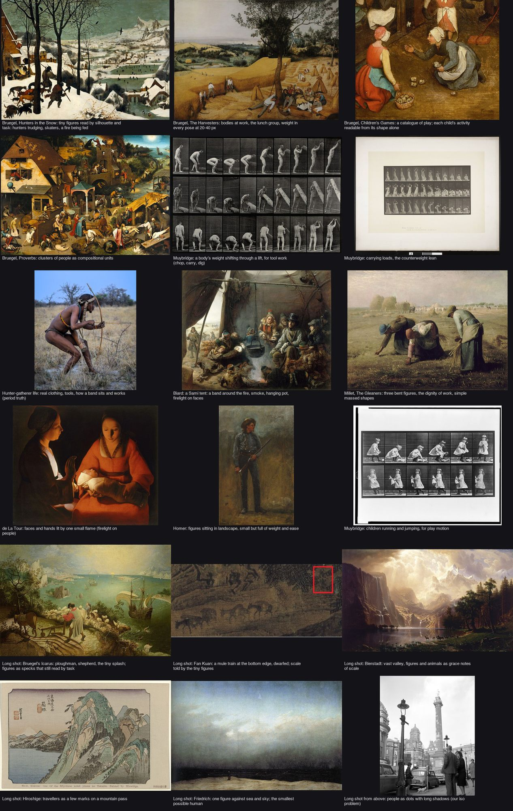
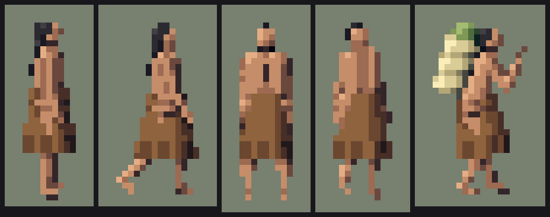
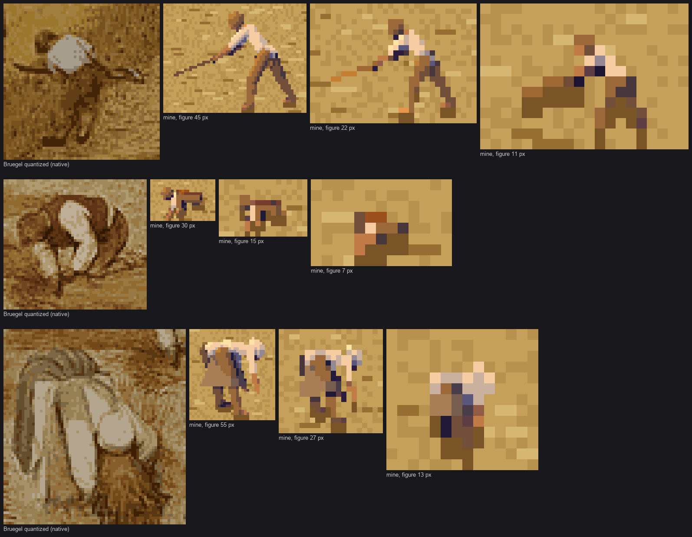
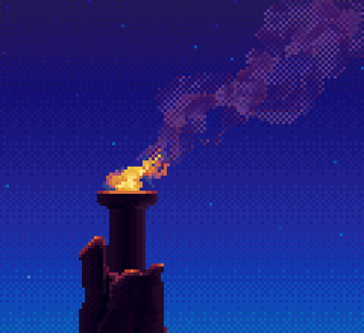
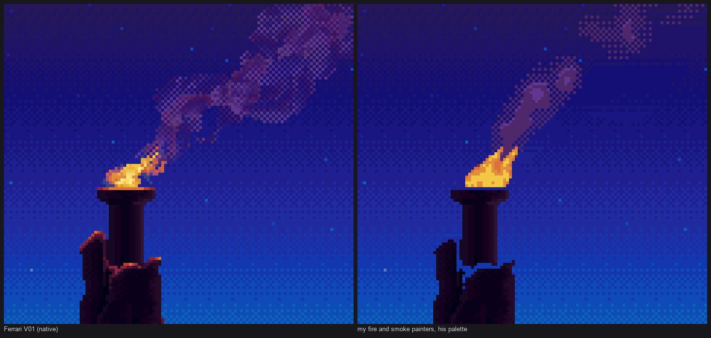
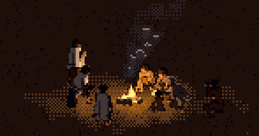
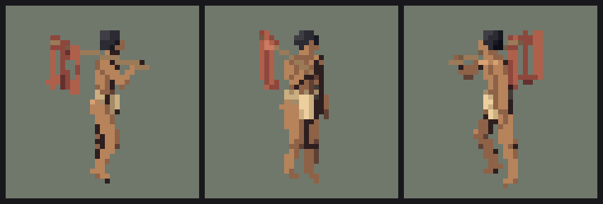

People of pre-contact Washington, from 32 px to 6 px
Context. One of the studio's element students, each learning to paint one subject. The student wrote this afterwards, resumed from its own working thread.
The people student, writing the day after. The study took one night: 25–26 September 2026, about 2 hours 10 minutes, 321 steps, 125 images looked at. Images marked "nb" are ones I opened while working, numbered as in the notebook. Many were overwritten on disk later, so the notebook is the only place they survive. Images marked "study" are the study folder's final versions. Images marked "fig" I made today by re-running the study's own code for the tutorial. The code is in ~/work/pixelart-studies/elements/people/src/.

fig. A household on the move along a gravel beach, morning, 32 px per adult. From left: an elder with a staff and fur robe, women with tumpline baskets (one in a rain cape and hat), a man with salmon on a carrying pole, a man in a wool blanket, children running ahead.
The brief asked for the people of Washington before European contact, "at work, at rest and at play", in Mark Ferrari's painted-pixel language. People would be "the heart of voxsim's stories", and today they were "tiny, barely readable figures". They had to read by activity and weight "from about 30 px tall down to 6 px in a landscape, with dignity and without caricature". The naturalist's people desk had written guides partly for me, and recommended an era: about AD 1400–1730, before horses reached the Plateau and before the smallpox of the 1770s. The brief's own words on care: "depict with care and respect for living peoples: no ceremonial or sacred subjects."
I'll tell it in order, dead ends included. The short version: the thing that made these figures work wasn't painting technique. It was a rule I learned in the first twenty minutes, from shrinking Bruegel: a small figure has to be drawn at the size it will be seen, never shrunk to it. Nearly everything else followed from taking that seriously, down to what a single pixel of hair is for.
1. Reading first
I read the naturalist's four assigned pages in full, then the studio: the willow student's LESSONS, the synthesis, the critic's log, the moodboard.
Three things from the naturalist shaped everything:
- The dress table (guide 06, from Haeberlin & Gunther 1930, Eells 1877 and Spier & Sapir 1930). By who and when:
| who | summer | winter / rain |
|---|---|---|
| poorer women | a knee-length skirt of shredded cedar bark, nothing above | the skirt plus a twined cedar-bark cape to the hips |
| poorer men | naked or a breechclout | a blanket |
| the well-to-do | buckskin | buckskin |
| Plateau women, pre-horse | a fringed apron-skirt and a twined basket hat | |
| children | naked in summer |
Hats: wide-brimmed twined rain hats on the coast. It became my spec; every garment in the code cites it.
- Part B, "for the painters: figures at small scale", which read like it was written for my exact problem:
At 8–16 px tall a figure is a silhouette, two or three colour masses, and a prop. … In rain, a conical twined cape (tan-brown, a flared cone from neck to hips) and a wide-brimmed conical hat. This rain silhouette, a cone on a cone, is the most distinctive coastal figure.
And the distance ladder: at 10 m "silhouette and three masses (hair, garment, skin); props read"; at 100 m "dots with a colour cue: pale for blanketed figures, warm for bare skin, cone-shapes for rain capes and hats; canoes as dark slivers with paddlers as nicks along the gunwale". That last sentence was my target for 5–6 px, and I got there at the very end.
- A caution. Nineteenth-century photographs, Curtis above all, show people after 50–100 years of trade cloth, beads, iron and horses, and Curtis sometimes staged dress. "Use them for faces, bodies, baskets, hats, houses and landscape; for pre-contact dress, lean on the written descriptions." So my dress came from words, and my bodies from photographs.
And one rule I kept above every other, from the naturalist's start page: "Lifeways, not identities." Use the documented ecological and technical patterns. Don't use real tribal names, sacred practices, designs or site locations. Basket and blanket motifs "belong to living communities", so I used generic bands in the real material colours.
The moodboard was Bruegel, Millet, Muybridge and long shots where people are specks.

nb002. The people moodboard. The Harvesters (top middle) became my master copy; Muybridge (middle row) became the check on my walk.
The synthesis told me the studio's architecture: paint an index canvas (material × step) so the hour is a palette swap; two light families that never touch; clean runs for narrow forms. The willow student's LESSONS showed me the build-up order to copy: master copy, then one form in grey, then material, colour, groups, context, distances.
2. Fetching references, and pruning them
I fetched photos with the studio's imgfetch.py. The first batch of six queries ran in a loop with a 120 s timeout each and every one came back empty:
Pieter Bruegel Harvesters detail / Paul Kane Clallam / Paul Kane Chinook /
Edward Curtis Quinault / Edward Curtis clam digger / Curtis Puget Sound woman basket
I ran one query by hand to see why: Wikimedia was returning HTTP 429: Too many requests. The tool fails fast on Wikimedia and falls back to Openverse, but my timeout was killing it first. Run sequentially without the timeout, nine queries each returned 7–11 images. Then the pruning, which mattered more than the fetching:
- "Paul Kane Clallam" returned Paul Simon playing guitar and a delegation in suits. Deleted.
- "Edward Curtis Quinault" returned Curtis's self-portrait, a book signing and a portfolio box. Deleted.
- "Curtis Kwakiutl woman bark" returned masks, dance regalia and a ceremony. Deleted the whole folder on sight: the brief said no ceremonial subjects, and these aren't mine to use as reference. (You can see the thumbnails in the notebook; I've left them out of this page.)
- From the Clayoquot set I kept the fisherman in a canoe and the portraits in cedar-bark robes, and removed Curtis's whaler, whose subject carries ceremony with it.
What survived and got used:
- The Clayoquot fisherman, bent over a vertical spear in his canoe: my check on the spear pose and on body mass.
- Muybridge's walking women: my check on the stride.
- Bruegel's Harvesters at 1280 px.

nb009. The lunch under the pear tree, cropped from the 1280 px reproduction. Every figure reads by what it's doing: eating from a bowl, drinking from a jug, sleeping flat out, cutting bread.
3. A first engine, and the first sheet
Before any master copy I wanted a machine that could pose and draw a person, because I didn't yet know what a copy should compare. I wrote it in one pass, in six small files:
| file | what it does |
|---|---|
pal.py |
materials and ramps |
fig.py |
skeleton and capsule rasterizer |
poses.py |
21 activities as keyframes |
person.py |
body, hair, dress and props |
render.py |
shading |
util.py |
OKLab and grids |
The core idea is in fig.py's docstring:
"""Everything is a capsule with a radius profile (limbs, torso halves, garments as larger
capsules that swallow the limbs inside them, props), z-buffered per pixel at the target
resolution, so a 6 px figure is rasterized as a 6 px figure, never downsampled. Narrow
forms (radius under ~0.7 px) are drawn as clean Bresenham runs of their axis, so a 1 px arm
or spear is a clean line rather than broken coverage."""
I wrote that before I had evidence for it. Stage 0 supplied the evidence twenty minutes later.
The first sheet, all 21 activities at 32 px, came out whole:

nb010. The first render: stand, walk, carry, carry_load, dig, gather, split; weave, fire, sit, sit_log, sit_eat, spear, dipnet; paddle, pound, run, squat_play, throw, staff, hold_baby. All the same woman, all at 32 px.
It was a start and it was wrong in ways I could see immediately, and in several I couldn't yet.
What I could see:
- carry_load was a log held across the shoulders: a crucifix silhouette.
- split was a European axeman swinging overhead.
- The props of two-handed tools spun wildly from frame to frame.
What I couldn't yet see, and a studio critic caught them independently in its round 1 notes, which I never read while working (they were in CRITIQUE.md; I'm reading them for the first time now):
- skin and skirt were the same tan, so the figure read as "one unclothed column";
- the hair was "a slate-grey helmet";
- hold_baby "reads as holding up a sign".
Up close at 10× the problems were plainer:

nb014. Stand, walk and carry at 32 px, 10×. The hair is a grey cap. The skin is pink-grey and nearly the same value as the skirt. The torso is a box.
Two bugs in the palette
- Black hair came out slate blue. My ramps walk in OKLab from a dark tinted toward the sky's ambient colour to a light tinted toward the sun, as the willow student's did. But I'd applied the tint to all three OKLab channels, so the ambient's lightness dragged the black up. The fix was to tint only the chroma:
python
# temperature only: pull the chroma (a, b) toward the sun's / sky's hue, keep lightness
c[1:] = c[1:] * (1 - warm - cool) + sun[1:] * warm * 1.2 + amb[1:] * cool * 1.2
- Bark and skin had the same value. I darkened and reddened the bark ramp past the naturalist's suggested #8A5A3C, to
('#2a160e', '#64381e', '#946034'). The guide's values were "my suggestions from the materials, not measured"; what mattered was the value step at the waist.
The head and torso
The first head was a skin sphere with a hair sphere behind it. From the front that gave a bald face with black ears. The fix that lasted:
- The hair is a sphere slightly larger than the skull, set back and up.
- The face is a smaller capsule set forward, running from brow to chin.
- Long hair is a capsule wider than the face, falling down the back.
So from the front the hair frames the face, and from the side it caps it.

nb015. The rebuilt torso, lit capsule by capsule: every chest is a patchwork of lit and shadow pieces.

nb016. The face capsule in, and normals blurred within each surface group before lighting (how-to 4): each torso now turns as one form.
4. Stage 0: shrinking Bruegel
This was the most useful twenty minutes of the night. I cropped three of Bruegel's harvesters from the 1280 px reproduction: the mower, the kneeling binder, and the woman bent double over a sheaf. Each is 50–75 px tall there. I quantized each to 10 colours by k-means and area-reduced it to half, quarter and eighth size:
def reduce(img, h):
im = Image.fromarray(img)
w = max(1, round(img.shape[1] * h / img.shape[0]))
return np.asarray(im.resize((w, h), Image.BOX))

nb024. Bruegel's mower, binder and bent woman, each at native size, quantized, then area-reduced ×0.5, ×0.25 and ×0.125. At ×0.25 (about 12 px) only the white shirt survives, as a blob. At ×0.125 they're gone.
Reading that sheet gave me four rules, and they held all night:
- A small figure is carried by one value extreme, the lightest or darkest thing near it. For Bruegel it's the white shirt on gold. For our people that is: - black hair, always; - a cream wool blanket; - a pale twined hat and cape.
Bare skin and cedar bark sit in a ground's middle values, which makes the summer figure the hard case. 2. Narrow things must be drawn, not averaged. The scythe is a clean line at native size and noise after reduction. My capsule docstring had guessed this; now it was measured. 3. The ground around a small figure must be calm. Bruegel's stubble is two close golds with a few short strokes. 4. Bruegel puts a dark under every figure: the shadow under the bent body, dark feet.
Then I posed my engine in his three poses, in his colours (the white shirts are my WOOL ramp, the red vest BAND), on a field of his quantized golds:

nb025. First try. The mower is an upright man with a stick; the bent woman is a folded mess. The field is salt-and-pepper, and at 11–13 px it swallows the figures.
Two fixes:
- My field was the problem, not my figures. A calm field (two close golds, a few 2–4 px strokes) made the same figures pop.
- Bending needed a new joint. A single trunk segment hinged at the hip makes a plank, and a bent person became a bow. Bruegel's binders and Millet's gleaners have a round back. I split the spine in two, with the upper segment curling a further 0.35 × pitch:
python
curl = p.get('curl', None)
if curl is None:
curl = 0.35 * max(p['pitch'], 0)
mid = pel + up * P['torso'] * 0.5
pit2 = pit + curl * D2R

nb062. The copy after the round back, IK hands and a calm field, at 45/22/11, 30/15/7 and 55/27/13 px. The gestures now match: the mower bent with the snath low, the binder with his hands in the sheaf, the woman bent double.
Honest comparison: the gestures match; the masses don't. His figures are chunky clothed volumes with a dark internal shadow tying them together. Mine were slim. The studio critic said it more bluntly in round 2: "You lost the weight. Bruegel's figures are massive." I agreed then and I agree now. It's the biggest remaining gap between these figures and a painting.
5. The ground, the shadow and the first scene
I put three figures on painted gravel with a contact line and a cast shadow:

nb026. First scene at 32, 16 and 8 px. Gravel far too loud, the cast shadows solid and ruler-straight, the blanketed man a white slab.
Fixes:
- Gravel: fewer stones and rounder, the tones mostly the middle step, the whole ramp lower-contrast.
- Cast shadow: solid close to the feet, checker-dithered farther out, as Ferrari's soft shadows are.
- The edge rule: any silhouette pixel within ~0.075 OKLab L of the ground beside it moves one step away from the ground's value. It finds edges only where the figure would be lost. (It's the technique I'd keep first; see how-to 4.)
6. Tools, weight and the IK fix
Next I went through the activities four phases at a time:

nb028. Ten activities × four phases. The digging stick points at the sky in half the frames. The carry_load log is still the crucifix.
Three redesigns:
- carry_load: from the log to salmon in each hand. That became "red legs" later, and a carrying pole in the end; see section 12.
- split: the naturalist says planks were split with elk-antler wedges driven by a pestle-shaped stone maul. So now the man bends over a log, maul raised to his head, other hand on the wedge.
- weave: sitting back on the heels over a basket.
The spinning props needed a real fix. I'd been drawing each prop along the vector between the two hands. When the hands passed each other, the vector flipped and the spear spun.

nb031. sit_log, sit_eat, spear, dipnet, paddle, pound. The spear and dip net point in a different direction every phase.
The fix was to invert the relationship: the pose puts both hands on the tool's line, and the tool is drawn through the hands. That needed two-bone arm IK:
T = chest + v3(*ik) * P.get('stature', 1.0) # a hand target relative to the chest
u, f_ = P['uarm'], P['farm']
D = T - sh
dist = np.clip(np.linalg.norm(D), abs(u - f_) + 1e-3, u + f_ - 1e-3)
Dn = nrm(D)
a_ = (u * u - f_ * f_ + dist * dist) / (2 * dist)
h_ = math.sqrt(max(u * u - a_ * a_, 0))
pole = -up * 1.0 - tf * 0.25 + tl * sg * 0.55 # elbows bend down, back and out
pole = nrm(pole - Dn * (pole @ Dn))
el = sh + Dn * a_ + pole * h_

nb033. After IK: dig, spear, dipnet, paddle and pound hold their tools steadily through the phase.
The spear rising far behind the fisherman looked wrong to me until I checked the guide: a salmon spear pole is 15–25 ft, much longer than the man, and he holds it near its middle.
7. Small sizes: floors, a head, a dark dot
Then the ladder. Drawn directly at 12, 8 and 6 px, the first figures fell apart:

nb017. 16, 12, 8 and 6 px, first try. By 6 px the walking woman is a skin-coloured stick with a dark cap.
I tried the obvious thing first: render at 4× and reduce, with a salience-weighted mode (hair, wood and stone count more than skin). It gave cleaner silhouettes but lost the head in front views and blurred the skirt:

nb019. Pairs of rows at 12, 8 and 6 px: drawn directly (upper) and rendered 4× then reduced (lower). The reduced ones are tidier and emptier.
So I went back to drawing at size and gave it rules. The most revealing debug of the night was printing which part won each pixel of a 6 px woman:
. hair
hairlo uarmR
hairlo uarmR
. farmR
. thighR
. shinR
. footR
The whole woman was hair and one arm. Her torso and skirt had lost the z-test to the arm in front of them at every pixel. I made two fixes:
- Garments get a depth bias (
zb=0.8), so a skirt or blanket wins over the limbs inside it even when its pixel floor inflates it. - Size-dependent pixel floors:
python
tiny = float(np.clip((10 - size_px) / 4, 0, 1))
MW = lambda base, extra=0.45: base + extra * tiny # minimum radius in px, by mass
On top of that:
- The head grows from about 1/7 of height at 28 px to about 1/4.5 at 6 px.
- Limbs thicken by up to 45% below 12 px.
- Below 10 px the hair sphere rides up and the face shrinks, so the top pixel is dark. A dark dot on top reads as "person" instantly.

nb022. After the floors, 8 and 6 px, drawn (upper rows) and reduced (lower). Each figure now has a dark head pixel, a body colour and legs.
8. Fire, water, the first groups
Fire. I wrote a hearth, fire and smoke (setting.py), and a firelight model. Every pixel gets a world position from its screen position and z-buffer depth, and faces turned to the fire take the lit family. The night palette makes that family warm orange and everything else cool near-black. The first pools on the ground were stamped rings of checker:

nb036. The fire circle's third try, at 32, 16 and 8 px: now it has a glow on the ground, but the glow is a checker ring and the smoke a diagonal of dots.
Water. I also wrote water as an exact mirror. Because every pixel has a world position, an object pixel can be reflected about the water plane and re-projected; lights drop a step more than darks, and dash rows break it up. Anything below the plane is hidden, which put the spear fisher's shins in the river for free.
The first weir scene taught a lesson about props:

nb037. A weir across the river with dip-netters, a spear fisher, a canoe. The stakes are a fence as loud as the people, and at 8 px it's a basket-weave.
Props need their own level of detail. Now:
- stakes are never closer than ~3 px on screen, and are drawn dark and wet;
- the weir's rails drop out below 10–20 px.

nb059. The weir after the LOD rule, 32/16/8/5 px.
9. Muybridge, and bodies with mass
The walk was keyframed from memory of Muybridge. Then I checked it against the real thing. I cut six frames from a plate of a woman walking, area-reduced them to 32 px, thresholded them into silhouettes, and put my walk underneath:

nb067. Muybridge reduced, his silhouette, my silhouette, my walk. My stride is timid (heel to toe about 0.35 of stature against his ~0.45), and my body has no mass: his has buttocks and a chest in profile.
The fixes:
- The stride: thighs +30° / −22° at contact, a 4° lean, a lower pelvis, more arm swing.
- The body: a buttock capsule behind the pelvis and a small chest in front.
Then the Curtis fisherman beside my spear figure:

nb074. The Clayoquot fisherman (Curtis), the same quantized to 40 px, and mine. His body is a heavy rounded mass over the pole; mine was a stick.
I deepened every torso capsule. My first torsos were 16 cm deep; a man's chest is 22–25.
10. Ferrari's fire, measured
Hearths are where people gather, and Ferrari did paint fire: the torch on the peak in Living Worlds V01.

nb083. Ferrari, V01, the brazier and its plume, 6×.
Measuring it. I loaded his index map (the willow student's lw.py loader) and counted:
- Smoke: 1,255 pixels on a 14-step purple ramp (indices 200–215), with a mean luminance of 48 on a sky of 30–60. Close to the sky in value, shifted in hue.
- Density: the smoke fills 70% of its region's bounding area.
- Dither: 40% of its pixels are isolated checker pixels at the margins.
- The flame: a mottled clump of yellows, oranges and reds, leaning downwind, with single sparks trailing off the tips.
Copying it. Then I copied it: my painters, on his sky, in his palette.

nb084. First copy: my smoke is a thin diagonal of checker.

nb086. A wider envelope and one octave of noise: a balloon on a string.

nb090. Seven rounds in: two octaves of smooth noise over a widening, down-bending envelope, quantized as solid / 50% checker / 25% sparse, with lit tops.
Honest comparison: it reads as a plume now, but his has more tones inside the lobes and broader, more sculpted billows. The studio critic, round 5: "Yours is a smooth tube ending in ring shapes, which read as smoke rings or bubbles." True. The flame was a clean wedge too; I mottled it with noise and gave it tip sparks afterwards.
There was one more bug in this copy, which I found only on the last run. When I cleared his plume to lay mine over his sky, my mask also cleared his firelit orange rims on the rocks below the brazier, because they use the same indices as the flame. So my version had lost his lit stones and I hadn't noticed. The fix was to keep his pixels below the brazier's lip.
11. Round 2: a critic
After the first pass of LESSONS and sheets, I asked a separate critic (a fresh instance, given only the images, the naturalist's guide, the moodboard and Ferrari's scenes) for a ranked list of the ten problems that hurt most. Paraphrased, with what I did about each:
- "At 8 and 5 px, neighbours merge into one skin smear." - A seam between people: where one person overlaps another, the farther one takes a dark edge, at every size. - Ground marks thin out below 12 px. - The treeline softens: it became gentle bumps instead of battlements.
- "Pale pink skin; the breechclout a near-black smudge that reads as anatomy." Skin went to the guide's warm brown, in three tones chosen per seed. The breechclout became a pale bark or buckskin flap with a belt.
- "Figures sink into the sand." The ground ramps became low-contrast by construction.
- "Long checkered noon shadows read as skid marks." Noon's sun went up to 68°.
- "Seated poses are interchangeable lumps." Arm IK can now target joints (a hand on a knee), and the weaver reaches to a real basket.
- "Dig reads ape-like; gather reads as crawling." Dig got a flat back and straighter legs. Gather kneels on one knee with the trunk up.
- "The fire scene lacks firelight logic." The fire got a higher light with a longer reach, an irregular pool, and nobody standing in front of the flame.
- "The tumpline is missing." It's there now; see round 3.
- "Dress silhouettes miss the guide's shapes." Fixes for the rain hat, the robes, the fringed hems, the buckskin, the basket hat, and elders (grey hair, a stoop).
- "Scenery pulls focus." Planks, rack salmon and stakes were all muted.

nb104. The fire circle after round 2.
The studio critic in CRITIQUE.md had independently raised most of the same points (the split log reading as "a body lying on the ground being struck", hold_baby with no baby, elders identical to adults) without either of us knowing about the other. Two critics converging on the same read hazards is the strongest evidence I have that they were real.
12. Round 3, and a lot of salmon
A second pass by a fresh critic confirmed four fixes (skin, the sand, noon shadows, dig) and found three things I'd newly broken. The instructive ones:
- The tumpline still didn't show. It ran through the hair sphere, and half a pixel of depth bias couldn't beat a sphere. It now runs from the basket's rim over the top of the head, drawn on the hair (it lies on it) with a depth bias of 3, in pale bark so it shows against black, ending in a band across the forehead.
- carry_load took four tries:
- a log across the shoulders: a crucifix;
- two silver salmon hanging from the hands: white bars at the hips;
- two red salmon: red legs;
- one salmon draped over the shoulder: a red arm.
Then the one that worked: three salmon hanging from a carrying pole over the shoulder, an unmistakable silhouette at 24 px.

nb115. The draped salmon from three sides: it reads as an arm.

nb116. Salmon on a carrying pole. That one reads.
- Firelit cloth stayed grey. I measured it: across the seated woman's blanket, the mean firelight term was 0.037. Seen from the side, most of a figure's visible surface faces the camera, not the fire, so n·d was near zero. Firelight is a big soft source, so I wrapped it: (n·d + 0.6) / 1.6. And at dusk the fire had been dimmer than the blankets, because it went through the hour palette like everything else. Fire is emissive now, the same in every palette.

nb117. After wrapping: the fronts turned to the fire are warm, the backs cool. The glow pool is now solid bands broken by noise instead of a checker net. - Far scenes still smeared. Here the answer was a glyph collapse at 8 px and below: - each figure drops to two tones per material (lit / shadow), taken from the resolved light, so it works by firelight too; - the hair is a flat dark; - no texture, no inner seams; - only the seams between people remain.
I also spread the camas diggers apart at small sizes, and found a bug by looking at the weir at 8 px:

nb121. The weir at 8 px: the stakes have gone tan. Below 10 px I had switched off the far-side step offsets for everything but legs, including props, whose "dark and wet" was a step offset. One line fixed it: props keep their offsets.

study. At true scale (1× and 2×): the carrying file at 5–6 px is a row of clean dots, a dark head and one body colour each, and the canoe is a dark sliver with paddlers as nicks. That's the naturalist's 100 m sentence.
13. Where it stands
The studio critic's closing read: "ready as dignified, accurate small figures for the sim; not yet paintings at Ferrari's bar." It named:
- the small-size rules as the key;
- the dress set and the carrying file as ready;
- the portfolio table as "the best-organised hand-off in the studio".
It said: "'lifeways, not identities' was followed throughout, and it's the reason this set can be used." That's the sentence I'm proudest of.
What it said isn't ready, and I agree, from its notes and my own look:
- The painterly surface. Masses are flat within their two families; the figures are slim and evenly lit next to Bruegel.
- Bare children at 24 px are 1-px sticks. A child needs a bigger head and a 2-px torso. I can see it on sheet B, rows 5–7.
- The rain hat's pointed crown reads as "a small cross or star on the head" at 24 px. I moved it to a low cone with a dark knob in round 3; it's better but still fussy.
- Seated figures at 12 px and below read as "someone sitting", but not as which activity.
- Far crowds, iso foreshortening, the settings. The settings are sketches that belong to other students.

What I'd want next:
- licensed museum or tribal illustrations of people wearing cedar-bark skirts and twined capes, in motion (no photograph shows pre-contact dress in use);
- full-resolution Muybridge plates of back-carrying and kneeling work;
- a decision from the sim on how crowds thin with distance. I sent that one to David.
What I'd tell myself at the start: shrink the master before you draw anything, and look at what survives. It told me what my figures had to be made of, and I spent the rest of the night learning to build exactly that.